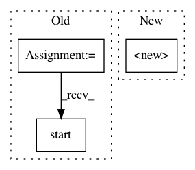

6caf721d1c33cf2fe2a18bdc26f25c8be599ff50,rl_coach/architectures/tensorflow_components/shared_variables.py,SharedRunningStats,__init__,#SharedRunningStats#Any#Any#Any#Any#Any#,27
Before Change
if pubsub_params:
self.channel = "channel-srs-{}".format(self.name)
self.pubsub = get_memory_backend(pubsub_params)
subscribe_thread = SharedRunningStatsSubscribe(self)
subscribe_thread.daemon = True
subscribe_thread.start()
def create_ops(self, shape=[1], clip_values=None):
self.clip_values = clip_values
with tf.variable_scope(self.name):
After Change
class TFSharedRunningStats(SharedRunningStats):
def __init__(self, replicated_device=None, epsilon=1e-2, name="", create_ops=True, pubsub_params=None):
super().__init__(name=name, pubsub_params=pubsub_params)
self.sess = None
self.replicated_device = replicated_device
self.epsilon = epsilon
self.ops_were_created = False
In pattern: SUPERPATTERN
Frequency: 3
Non-data size: 3
Instances
Project Name: NervanaSystems/coach
Commit Name: 6caf721d1c33cf2fe2a18bdc26f25c8be599ff50
Time: 2018-11-18
Author: gal.leibovich@intel.com
File Name: rl_coach/architectures/tensorflow_components/shared_variables.py
Class Name: SharedRunningStats
Method Name: __init__
Project Name: hyperdashio/hyperdash-sdk-py
Commit Name: f11bb1ef1321e9525fd92de72b2e8a78af24cf17
Time: 2017-07-16
Author: richardartoul@gmail.com
File Name: hyperdash/hyper_dash.py
Class Name: HyperDash
Method Name: run_http
Project Name: mlflow/mlflow
Commit Name: 09e5990f27d8e59251926776d0f9b99f246d7671
Time: 2018-07-30
Author: smurching@gmail.com
File Name: mlflow/projects/submitted_run.py
Class Name: SubmittedRun
Method Name: __init__